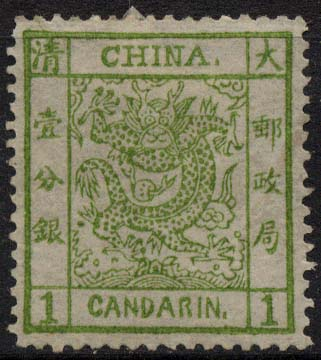
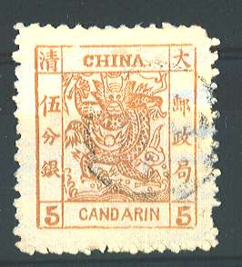
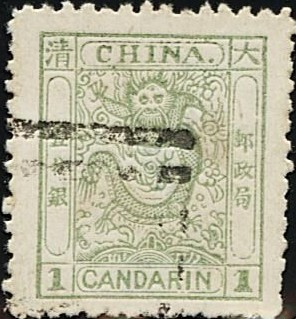

Return To Catalogue - China 1894-1897 - Forgeries of the 1894 issue - China 1897-1908 - China 1909-1920 - China miscellaneous - Local Issues, part 1 - Local Issues, part 2 - Macao - Shanghai - Formosa - Manchukuo (Manchuria)
Note: on my website many of the
pictures can not be seen! They are of course present in the
catalogue;
contact me if you want to purchase it.

(Reduced sizes)
1 cand green 3 cand red 5 cand yellow
For the specialist: these stamps are perforated 12 1/2.
Value of the stamps |
|||
vc = very common c = common * = not so common ** = uncommon |
*** = very uncommon R = rare RR = very rare RRR = extremely rare |
||
| Value | Unused | Used | Remarks |
| 1 c | RR | R | |
| 3 c | R | *** | I've seen an imperforate strip of three in the Ferrari collection. |
| 5 c | R | *** | |
Cancels:
The most common cancels are the customs seal cancels. Also can be found the customs date stamp cancellations.
(Customs seal cancel)
(Customs date cancel)
More information on cancels can be found at: http://www.chinesephilately.com/customs.htm, where many customs seal cancels, customs date stamps cancels and other cancels can be found.
Forgeries, examples:
 

Four forgeries, probably made by the same forger, all with very
wide margins and badly perforated. There is a star like feature
in the beard of the dragon (just below the chin), which is not
present in the genuine stamps. Note the spelling mistake
'CANDARIN' instead of 'CANDARINS' in the 5 c value. These
forgeries might have been made by the Japanese stamp forger Kamigata.


A forger from Hialeah (Florida, USA) has made many forgeries of these stamps. They are probably generated with a computer scanner and printer. In general, for these 'Hialeah forgeries', the paper is too modern, the sizes are not correct and most details are very poor. They are offered in large quantities on Ebay. Some examples of these forgeries:


(Hialeah forgeries)
(Reduced size)
1 cand green 3 cand lilac 5 cand yellow Surcharged (1897)

(Reduced size)
1 c on 1 cand green 2 c on 3 cand lilac 5 c on 5 cand yellow
These stamps exist with various perforations. These stamps have watermark 'Shell' (or is it the Ying - Yang symbol?).
Watermark seen from the back of a 1 c stamp, reduced size.
Value of the stamps |
|||
vc = very common c = common * = not so common ** = uncommon |
*** = very uncommon R = rare RR = very rare RRR = extremely rare |
||
| Value | Unused | Used | Remarks |
| 1 c | ** | ** | |
| 3 c | *** | ** | |
| 5 c | *** | *** | |
| Surcharged | |||
| 1/2 c on 1 c | *** | *** | Two types of overprint |
| 2 c on 3 c | *** | *** | Two types of overprint |
| 5 c on 5 c | *** | *** | Two types of overprint |
I've seen two imperforate 3 c proofs.
Some primitive forgeries, examples:
Three forgeries, apparently made by the same forger. The 1 c has
bottom inscription in green instead of white on green. The
inscription of the 3 c value appears to be 'CANDARING' with an
inverted 'G' at the end (on some copies this is more clearly
visible than on the one shown above). These forgeries might have
been made by the Japanese stamp forger Kamigata.

Same forgery of the 1 c; bottom inscription is wrong.


Rather deceptive forgery of the 5 c value, with wrong
perforation, too wide margins and a bogus cancel.
For stamps of China issued from 1894 onwards click here.


{kind=link}
{kind=link}
{kind=link}
{kind=link}